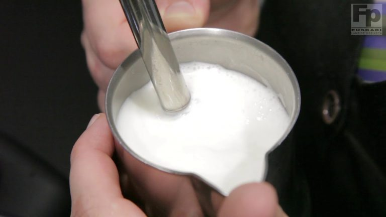
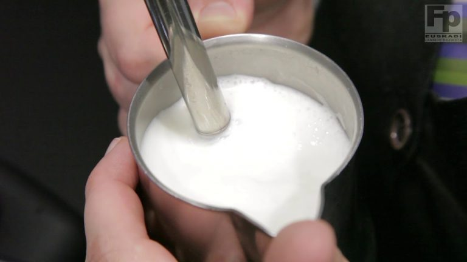
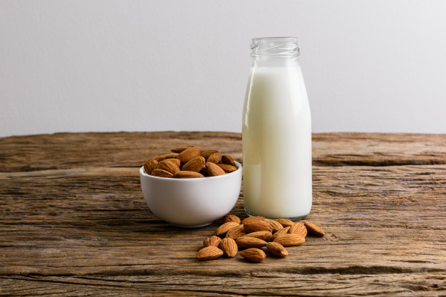
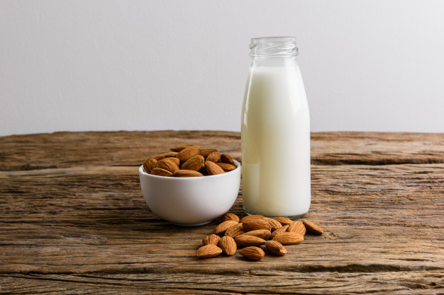

La leche
Vaporizar
Hasta ahora hablamos del café y de las mejores maneras de prepararlo para que puedas tomarte esa rica taza. Buscaste el mejor grano, elegiste el equipo para prepararlo, calculaste las proporciones de extracción entre agua y molienda y hasta elegiste tu mejor taza.
Pero si te gusta con leche, hay que tener en cuenta otras tantas cuestiones. La leche es “el ingrediente” ideal para combinar el café pero, como seguro ya te diste cuenta, también va a cambiar el sabor final. Es por eso que lo mejor es buscar una leche que no opaque ese sabor.
La mejor es la que está balanceada entre proteínas, carbohidratos y grasas. Esto es necesario porque cuando la calentamos los ácidos grasos le dan un aspecto brillante, buen sabor y textura cremosa. Si es demasiado alta o muy baja en grasas, vamos a obtener un líquido muy cremoso o muy aguado.
El principal hidrato de carbono de la leche es la lactosa, la que le brinda su característico sabor dulce. Un rico sabor que se puede perder si no tenemos en cuenta la temperatura a la que la exponemos. La lactosa es un azúcar doble compuesto de glucosa y galactosa. Al vaporizar la leche las proteínas “se cortan” y aumenta la formación de agua.
Si calentás la leche a una temperatura de entre 55 y 65 grados, vas a lograr un café con leche más dulce. Si te pasás de los 70 grados, se pierde el dulzor y con él la textura cremosa tan necesaria para realizar el latte art en tu capuccino.
Técnica para vaporizar
Importante: comenzá con leche bien fría en un recipiente o jarra de acero inoxidable.
- Purgá el vaporizador de la máquina espresso.
- Limpia con un trapo limpio.
- Tomá la jarra con la leche fría y colocá la lanceta o vaporizador sobre la superficie de la leche asegurándote que los agujeros de la lanceta estén sumergidos en la leche. Sostené siempre la jarra inclinada con la lanceta descentrada sin tocar la jarra.
- Abrí el vapor por completo buscando que genere un remolino de leche y aire. Sumergí la lanceta hasta tres cuartos de la jarra manteniendo y controlando el remolino.
- Tu leche está lista cuando la veas brillante y cremosa y sientas que el calor de la jarra sea aún tolerable para el dedo. Cuando el calor se intensifique, cerrá el vapor por completo. La leche no debe subir demasiado; tampoco debe tener burbujas demasiado grandes.
La textura debe ser suave, al contrario de la espuma que ponen con cuchara en muchas cafeterías.
 

Leches vegetales
Las opciones de leches para el café que ofrece hoy el mercado es amplia y variada. En este abanico, las leches vegetales ganan cada vez más terreno. Los hábitos alimentarios están cambiando en pos de la sostenibilidad del planeta y para disminuir el consumo de productos de origen animal. Debido a su similitud de color y consistencia se las conoce como leches vegetales, y su categoría es la de bebidas vegetales.
La diferencia básica, además de su origen, es el contenido en grasas y proteínas. Son leches elaboradas a partir de frutos secos, cereales o semillas. No tienen lactosa, suelen tener un mayor porcentaje de vitaminas y calcio. No tienen conservantes ni colorantes y llegan en envases reciclables.
En las cafeterías de especialidad la oferta no láctea tiene cada vez más demanda y es por eso que los especialistas estudian cómo combinar mejor estas leches con los granos del café.
Al igual que cuando se usa leche de vaca, hay que tener en cuenta las características de sabor de tu café, que como vimos, varía mucho según el origen, los beneficios y los tuestes.
Con la premisa que los atributos del café estén presentes y en su mejor forma, hay que elegir el tipo de bebida vegetal que combine mejor. Como regla general te recomendamos buscar cafés más intensos, de tueste medio alto y con más dulzura que acidez.
Un café con mucha acidez y poco cuerpo va a dificultar la armonía entre ambas bebidas. A la hora de elegir cuál usar para el café hay que tener en cuenta sus sabores.
Algunas leches vegetales tienen sabores demasiado fuertes y otras son muy difíciles de vaporizar. En general, las leches vegetales con más carácter para usar en el café son las leches de frutos secos como almendras, avellanas o nueces.
La leche de soja fue la primera que entró al mercado, tiene un sabor bastante neutro y se puede calentar más sin perder textura. Sin embargo, la de almendras se convirtió en una de las más elegidas por el aporte de sabor dulce al café. Los baristas también la eligen porque su textura facilita la creación del latte art.
 

La de coco es cremosa y más parecida a la tradicional en su textura, pero su sabor característico puede opacar el sabor del café. Para una bebida bien densa, la de arroz es la que más carbohidratos contiene y aporta una textura muy cremosa.
Con la de arroz no se consigue la espuma apropiada para un cappuccino, aunque su sabor sutil le da protagonismo al café.
La leche de avena ofrece un sabor suave a malta que combina muy bien con el café. Su textura genera una crema que no se corta, con lo que se puede lograr un buen capuccino.
En general, al calentarse, las leches vegetales reaccionan de manera diferente a la de vaca. Tienen menos grasa y proteínas, por lo que a veces es difícil emulsionarlas. Los cambios de temperatura, la acidez del café y el impacto de la formación de espuma hacen que estas leches “se corten” más fácilmente. Para no romper la cadena molecular y lograr una buena crema y sabor, no hay que calentarlas por encima de los 55 grados.
Arte con leche (latte art)
Los orígenes se encuentran en Italia. Sin embargo, el latte art se desarrolló en los EE.UU. en los años 80 y 90 y luego se extendió al resto del mundo. Sus inicios siguieron la evolución del espresso y de la microespuma, es decir, la textura ideal de la leche al vapor para la creación de arte latte.
A medida que la espuma de la leche blanca se vierte y se levanta para tocar la superficie de color marrón del espresso, se forma un contraste y el diseño emerge.
La leche está presente en lattes, cappuccinos, macchiatos y se necesita un poco de práctica para hacerlo bien. Requiere una combinación de las herramientas adecuadas, respetar el momento y el movimiento adecuado para obtener la leche perfectamente al vapor.

Calidad: se necesitan ingredientes de calidad, por eso la leche debe estar fresca y fría, no debe estar expuesta al calor o a la luz antes de usarse.
La jarra: utilizá una jarra de acero inoxidable con una boquilla estrecha. Es importante que la jarra esté fría y limpia. Llénala con la cantidad suficiente de leche como para obtener la textura adecuada, ya que al utilizar una cantidad menor, puede que se caliente de más. Aunque una jarra de plástico puede ser utilizada, considerá que el acero inoxidable es un mejor conductor de calor.
Vaporizar la leche: es una habilidad esencial cuando se trabaja en la industria del café y sobre todo en arte latte. La leche es el segundo ingrediente más común en las bebidas de café. La leche tratada con vapor es la que ha sido calentada mediante el uso de vapor. El espumado de la leche se verifica cuando ha sido espumada también usando vapor. La diferencia es la colocación de la lanceta de vapor en el líquido.
Tipos: los profesionales diferencian dos tipos de espuma de leche. Una resistente, densa y de poros finos para capuccino, y otra cremosa, más líquida y lisa para trabajar el latte art. La sólida se asienta en la superficie y no penetra. Es más densa. La cremosa fluye primero al fondo y luego sube, por lo que se puede dibujar en la superficie.